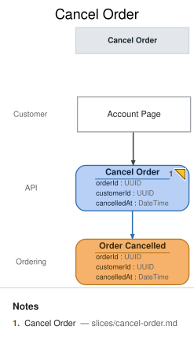

Cancel Order
State Change · implemented
{kind=link}
| Kind | Name | Detail |
|---|---|---|
| ui | Account Page | @Customer |
| command | Cancel Order | { orderId: UUID, customerId: UUID, cancelledAt: DateTime } |
| event | Order Cancelled | @Ordering · { orderId: UUID, customerId: UUID, cancelledAt: DateTime } |
Slice: Cancel Order

Intent
Customers have been phoning support to cancel orders they placed by mistake or no longer want.
This slice lets them self-serve: a customer cancels their own order from the Account Page,
the same screen Order Status already renders on. This is the walkthrough's CHANGE beat — a
real, small change request modeled as an added slice, not a code-first patch — and it reopens the
cancellation question domain-decisions.md deliberately deferred out of the base six-slice model.
Trigger & Actor
The Customer, from the Account Page, cancels an order they placed. Only the customer who
placed the order may cancel it — see Non-Functional Requirements. Each cancel click issues one
Cancel Order command carrying the order's own orderId.
Command / Input
Command: Cancel Order
| Field | Type | Required | Rules / Validation |
|---|---|---|---|
| orderId | UUID | yes | Must name an order with a recorded Order Placed event. Unknown orderId is rejected — there is nothing to cancel. |
| customerId | UUID | yes | Must match the customerId on that order's Order Placed event — see the authz note under Non-Functional Requirements. |
| cancelledAt | DateTime | no | Modeling note, not a real request field: this is the server clock's timestamp at command-handling time, not something the client sends. It appears on the command element only so the DSL's event-field/command-field completeness check can trace Order Cancelled.cancelledAt to a same-slice origin — the same convention place-order.md documents for placedAt (see domain-decisions.md's timestamp-origin convention). The actual API request body excludes it. |
Trigger
Triggered by: screen Account Page @Customer
Event(s) Emitted
Event: Order Cancelled → context Ordering
Read by: Open Orders — cancelled view (this branch's slices/open-orders-cancelled.md,
the repeated Open Orders instance).
| Field | Type | Immutable Fact? | Source / Notes |
|---|---|---|---|
| orderId | UUID | yes | Copied from the command; identifies the order being cancelled. |
| customerId | UUID | yes | Copied from the command, after authz has confirmed it matches the order's owner. |
| cancelledAt | DateTime | yes | Server clock at the moment the event is recorded — the actual, meaningful origin of this field (see the Command/Input note above on why it's echoed there too). |
Invariants / Business Rules
- INV-CO-1 (v2): an order can be cancelled before
Payment Capturedexists for it, or within the 24-hour grace window after capture. The payment provider auto-voids captures inside its settlement window, so a cancel within 24h ofcapturedAtneeds no refund flow; beyond that window,Cancel Orderis rejected — money has genuinely moved, and post-settlement cancellation belongs to a separate (unmodeled, future) refund/return path, not this command. (v1 said "only BEFORE capture, ever"; the grace window shipped in PR #17 ahead of this doc — the 2026-08-23 conformance run caught the drift and the ratifier ruled the behavior intentional. See## Deltaandconformance/2026-08-23-report.md.) - INV-CO-2 (idempotent cancel): A
Cancel Ordercommand for anorderIdthat already has anOrder Cancelledevent recorded is a no-op: no second event is appended, and the command returns the original cancellation's result (its originalcancelledAtstands, never overwritten by a later duplicate click's timestamp). Design call: cancellation is a one-way action a customer is asking for, not a payload the tool needs to compare for conflict (unlikePlace Order's INV-PO-1, there's no meaningfully different "conflicting" cancel payload to reject) — the second and any laterCancel Orderfor an already-cancelled order is always a harmless retry, so it is always treated as one rather than rejected.
Scenarios (Given / When / Then)
- Happy path — Given
Order Placedexists fororderId: O1/customerId: C1and noPayment Capturedhas been recorded forO1, WhenC1submitsCancel OrderforO1, ThenOrder Cancelledis recorded withorderId: O1,customerId: C1, and a server-assignedcancelledAt;O1disappears from (or is marked cancelled on) theOpen Ordersstaff board viaOpen Orders — cancelled. - Cancel within the grace window (INV-CO-1 v2) — Given
Order Placedexists fororderId: O1andPayment Capturedwas recorded forO1less than 24 hours ago, WhenC1submitsCancel OrderforO1, ThenOrder Cancelledis recorded (the provider auto-voids the capture inside its settlement window). - Rejected — captured beyond the grace window (INV-CO-1 v2) — Given
Order Placedexists fororderId: O1andPayment Capturedwas recorded forO1more than 24 hours ago, WhenC1submitsCancel OrderforO1, Then the command is rejected as too-late-to-cancel and noOrder Cancelledevent is recorded. - Idempotent retry (INV-CO-2) — Given
Order Cancelledalready exists fororderId: O1, WhenC1submitsCancel OrderforO1again (double-click, retried request), Then no secondOrder Cancelledevent is recorded and the command returns the original cancellation's result. - Rejected — wrong customer — Given
Order Placedexists fororderId: O1/customerId: C1, When a different customerC2submitsCancel OrderforO1, Then the command is rejected as unauthorized and noOrder Cancelledevent is recorded. - Rejected — unknown order — Given no
Order Placedevent exists fororderId: O9, WhenCancel Orderis submitted forO9, Then the command is rejected as unknown and no event is recorded.
Delta
- MODIFIED (v1 → v2, ratified 2026-08-23): INV-CO-1 — "cancel only before
Payment Captured" became "cancel before capture, or within the 24h post-capture grace window (provider auto-void settlement window)". Scenario "Rejected — already captured" split into the within-grace success and beyond-grace rejection scenarios above. Origin: shipped in PR #17 ahead of the model; caught by the 2026-08-23 conformance run; ratified as intentional (ruling recorded inconformance/2026-08-23-report.md). Implementation already conforms — no propagation work.
Alternate & Error Flows
- Race with capture: if
Payment CapturedandCancel Orderare in flight at nearly the same time for the same order, INV-CO-1 is evaluated against whatever this command handler's consistency boundary has actually recorded at decision time — ifPayment Capturedlands first, the cancel is rejected (INV-CO-1); ifCancel Orderdecides first, capture is this model's concern to reject on its own side (out of scope for this slice's doc; seeslices/record-payment-result.md). - Already-cancelled retry: see INV-CO-2 — always a silent no-op, never a rejection, since a repeat cancel request carries no information that could conflict with the first.
- Refund/return after capture: explicitly out of scope for this slice (see INV-CO-1) — a future slice, not modeled here.
Non-Functional Requirements
- Security / authz: the Customer must be authenticated and may cancel only their own order —
a
Cancel OrderwhosecustomerIddoesn't match the order's recorded owner is rejected (see the "Rejected — wrong customer" scenario above), enforced by this command handler itself, not upstream middleware, because it needs the order's owncustomerIdto check against. - PII & compliance: no new PII beyond the existing
customerIdreference already carried byOrder Placed. - Performance / SLA: none beyond ordinary interactive request latency — no special SLA for this demo.
Dependencies & Read Models Affected
- Upstream events this slice relies on:
Order Placed(slices/place-order.md) — establishes the order's existence and owningcustomerIdfor authz;Payment Captured(slices/record-payment-result.md) — gates INV-CO-1. Both are read by this command handler's own consistency boundary (not projected into aviewhere — a State Change slice decides against prior events directly, the same wayPlace Orderdecides against its own priorOrder Placedfor INV-PO-1). - Downstream read models / slices affected:
Open Orders — cancelled(slices/open-orders-cancelled.md), the repeatedOpen Ordersinstance this event feeds.
Open Questions
- Should a cancel after
Payment Capturedbe a rejection, or should it trigger a refund flow automatically? Resolved: rejection. A refund/return flow is a distinct, future capability (its own slice) — this slice's job is the small, self-service "I changed my mind before you charged me" case only. See INV-CO-1. - Should a duplicate cancel (same orderId, already cancelled) be a no-op or a rejection? Resolved: no-op. See INV-CO-2 and its rationale.